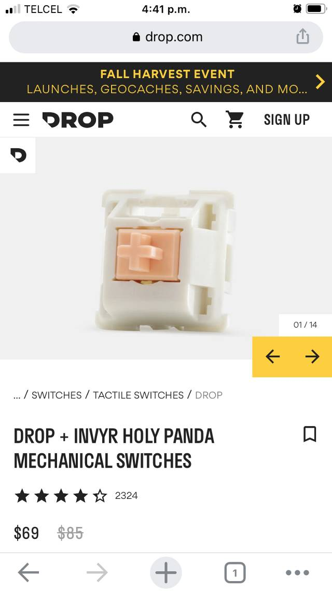
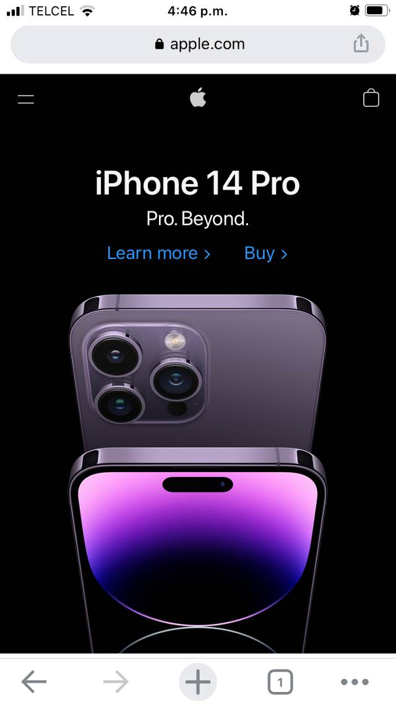

Proximity
Drop
drop.comEach of the product pages in the shop of Drop.com accomplishes good proximity within all of its elements. We can observe that the spaces between the product image, the breadcrumb, the heading, the rating, and the price are the same.
Alignment
Apple
apple.comThe heading, the subtitle, and the image are center aligned, thus creating a strong sense of relevance at the first glance when a user enters this website.
Contrast
University of Waterloo
uwaterloo.caThe use of bright colors against a dark background generates contrast and breaks the monotonic stereotype of a university's website.